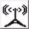

 FunkDas Funk-Portal ermöglicht dem Benutzer Vorgänge auszuführen, die mit dem Eingang bzw. Ausgang von Meldungen, Befehlen und Aufträgen in Zusammenhang stehen.Der Reiter Versenden einer MitteilungVersenden einer Mitteilung Beim 'Versenden einer Mitteilung' hat der Benutzer die Möglichkeit bereits erstellte Mitteilungen als 'ist übermittelt' zu kennzeichnen. Dabei müssem Übermittlungsart und Übermittlungszeitpunkt angegeben werden. Nach dem Wählen von 'Lade Meldung' bzw. 'Lade Auftrag' erscheint eine Liste, die alle noch nicht übermittelten Meldungen bzw. Aufträge anzeigt. Von den angezeigten Mitteilungen kann nun eine zum Versenden ausgewählt werden. Diese wird dann in einem Dialog zu 'Versenden einer Mitteilung' angezeigt. Der Vorgang kann mit der Wahl von 'Abbrechen' abgebrochen werden. Durch das Setzen von 'ist übermittelt' und der Angabe des 'Übermittlungszeitpunkt' kann auch eine bereits in der Vergangenheit durchgeführte Übermittlung im System erfasst werden. Der Reiter Aufnehmen und Versenden einer MitteilungAufnehmen und Versenden einer Mitteilung Im Dialog zu 'Aufnehmen und Versenden einer Mitteilung' kann der Benutzer neue Mitteilungen erstellen und diese als übermittelt markiert in das System einpflegen. Durch die Wahl von 'Erstelle Meldung' bzw. 'Erstelle Auftrag' wird die Eingabemaske für eine neue Meldung bzw. einen neuen Auftrag geladen. Nun können alle Informationen eingegeben werden, die zur neu zu erstellenden Mitteilung gehören (siehe Portal Aufträge). Die neu erstellte Mitteilung kann mit 'Speichern' gespeichert, mit 'Speichern & Drucken' gespeichert & gedruckt oder aber durch 'Zurücksetzen' verworfen werden. Bereits erfasste Mitteilungen können auch nachträglich über das Portal Report gedruckt werden. Der Reiter Erfassen eingehender MitteilungenErfassen eingehender Mitteilungen Der Dialog 'Erfassen eingehender Mitteilungen' ermöglicht das Erfassen von eingehenden Mitteilungen. Durch die Wahl von 'Erstelle Meldung' bzw. 'Erstelle Auftrag' wird die Eingabemaske für eine neue Meldung bzw. einen neuen Auftrag geladen. Nun können alle Informationen eingegeben werden, die zur neu zu erstellenden Mitteilung gehören (siehe Portal MAT). Die neu erstellte Mitteilung kann mit 'Speichern' gespeichert, mit 'Speichern & Drucken' gespeichert & gedruckt oder aber durch 'Zurücksetzen' verworfen werden. Bereits erfasste Mitteilungen können auch nachträglich über das Portal Report gedruckt werden. Durch die Wahl eines 'internen Empfängers' kann der Benutzer aus pELS gewählt werden, an den die eingehende Mitteilung weitergeleitet werden soll. Zurück project.ELS version 1.0 |